Next: Sliding conditions Up: Diffusion term Previous: Outlet Contents
At a wall the velocity is zero. However, it is more effective to calculate the stress at the wall directly. The mass conservation amounts to
| 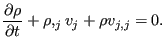 | (556) |
For stationary flow (
 ) at the wall
(
) at the wall
(
 ) we arrive at
) we arrive at
| 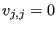 | (557) |
or (Figure 159)
| 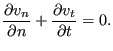 | (558) |
| 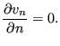 | (559) |
Now, because
 |
(560) |
one obtaines 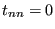, since  (just derived) and also the
turbulent kinetic energy at the wall is zero. For the tangential component
one obtains:
(just derived) and also the
turbulent kinetic energy at the wall is zero. For the tangential component
one obtains:
| 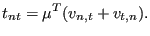 | (561) |
Since 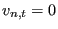, one arrives at
The velocity at P (Figure 159) is now decomposed into a component normal and a component tangent to the wall:
| (563) |
and
| 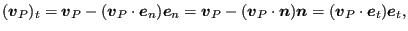 | (564) |
where 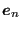 and 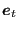 are unit vectors in n- and t-direction, respectively. The stress tensor amounts to:
 |
(565) |
and the normal vector orthogonal and external to the surface satisfies:
| 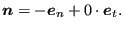 | (566) |
This leads to the following stress vector 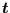 :
 |
(567) |
or
Approximating 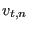 by
| 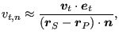 | (569) |
one obtains by combining Equations (562) and (568):
| 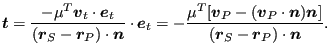 | (570) |
Therefore, the integral at the wall can be approximated by:
| 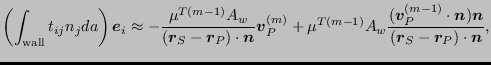 | (571) |
where  is the area of the wall face.
The first term contributes to the left hand side, the second term to the
right hand side of the system of equations.
is the area of the wall face.
The first term contributes to the left hand side, the second term to the
right hand side of the system of equations.